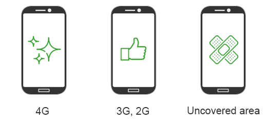

In this article, we explain the issues of mobile applications energy and performance, and how to detect them before your users.
Performance and energy, essential criteria for mobile applications
The performance of a digital solution is an important criterion for user.
Without performance, users will be critical and in the worst case will no longer use the service. This factor has been reinforced with mobility, given the less powerful platforms and networks with unequal characteristics. To this was added the problem of energy. Indeed, it’s uncommon that the mobile platforms are powered up continuously!
Late detection of energy and performance issues
Before the arrival of smartphones, performance requirements had been mainly focused on server-side load tests. Development teams continued this process by adding some performance tests on emulators or on their own phones.
This approach makes it possible to detect some performance issues but is however limited. On the one hand, the network connections and devices of the development teams are generally of a good level and not sufficiently representative of those of the end users; on the other hand, the energy problem is never taken into account. Indeed, tests are performed on Wi-fi connections with fiber optics and an emulator running on a powerful developer station. Very far from a 2G connection on a refurbished phone.
In the end, the solution passes the testing phase stage for the start of production but feed backs from the field are numerous. One can anticipate this with Real User Monitoring’s tools, however the cost of analysis of the problems and correction is high (and doesn’t take into account the issues of energy).
Detect issues before going into production
In order to improve your mobile digital service, it’s necessary to detect the maximum number of issues before going into production. And this is possible by applying a structured and targeted test strategy that will run on test phones.
It’s first necessary to identify the main types of use of the application. Don’t rule out the possibility of testing with the excuse of fragmentation. This just requires to identify 2 or 3 types of user: user with a state of the art phone and 4G connection, mobile user with a medium range phone, user in uncovered area with a refurbished phone. This makes it possible to set up the platforms on which you will test (here 3 types of telephones) as well as the connections (Wi-fi, 3G, 2G).

Then, it’s not necessary to set up tests that cover 100% of your features. The idea is rather to control that the main use of the application responds to acceptable criteria of performance and energy consumption, and that in all the parameters of executions that you have defined (Platform and connection).
Pre-production detection with GREENSPECTOR
GREENSPECTOR‘s users apply this strategy through the use of particular features:
- Tests on real phones of different generations
- Integration of automated tests or launch of manual tests
- Modification of the means of connection of devices (Wifi, 2G…)
- Measure the performance and energy of each application feature
In the end, before each release into production (or even more regularly), the execution of targeted test campaigns on real mobile devices makes it possible to detect the main energy and performance issues.